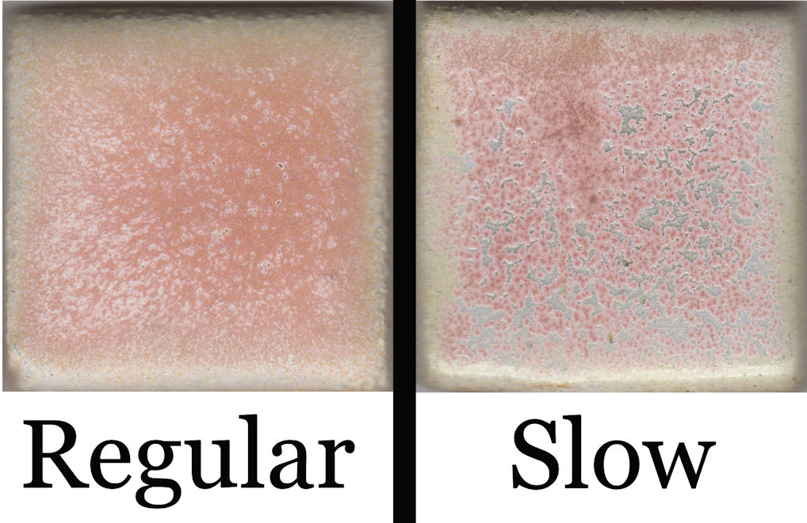
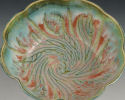
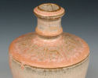
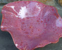
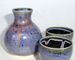

Commercial
Coyote Archies Base
A runny commercial glaze that is relatively quiet on its own but becomes highly atmospheric when layered, especially with slow cooling.
Coyote Clay and Color
Archies Series
Cone 6
Effect
Finish tags: runny, layering, fluid
Effect tags: dramatic interaction, color pulling, slow-cool sensitive
Atmosphere: electric
Use Notes
Application: The official page describes it as pale pink or cream on its own and most compelling when combined with other glazes. The Archie series is strongly affected by slow cooling.
Food safe: Not specified
Sources: coyote-archies-base





Notes
This is one of the better commercial routes when the goal is interaction rather than single-glaze beauty.
- It should be approached as a system glaze, not a standalone finish.
- The slow-cool sensitivity makes it especially relevant to this project because controlled cooling is one of the main ways electric work can gain life.
- The official page now contributes multiple finished-work examples instead of only the glaze tile.